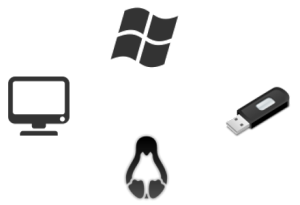

MultiBootUSB is a cross platform software written in python which allows you to install multiple live linux on a USB disk non destructively and option to uninstall distros. Try out the world's first true cross platform multi boot live usb creator for free.